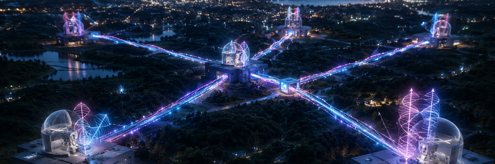
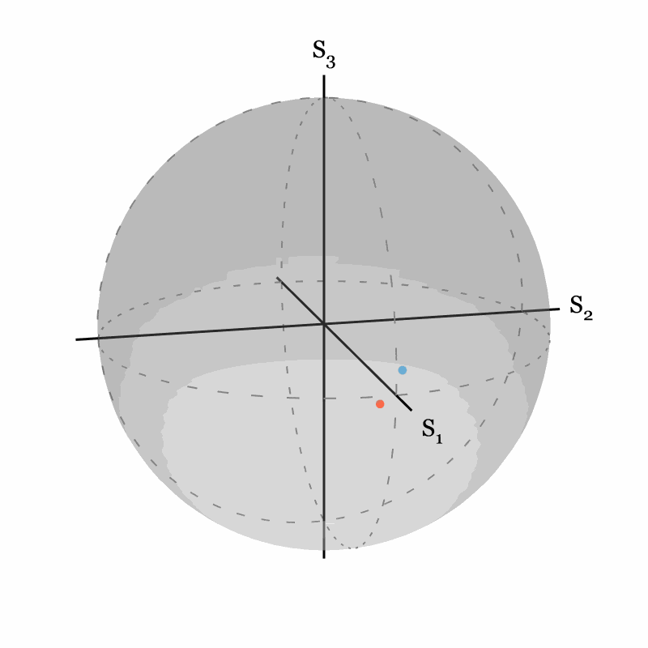
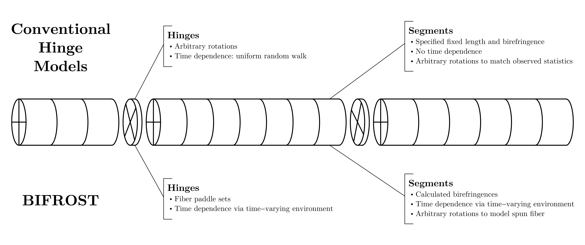
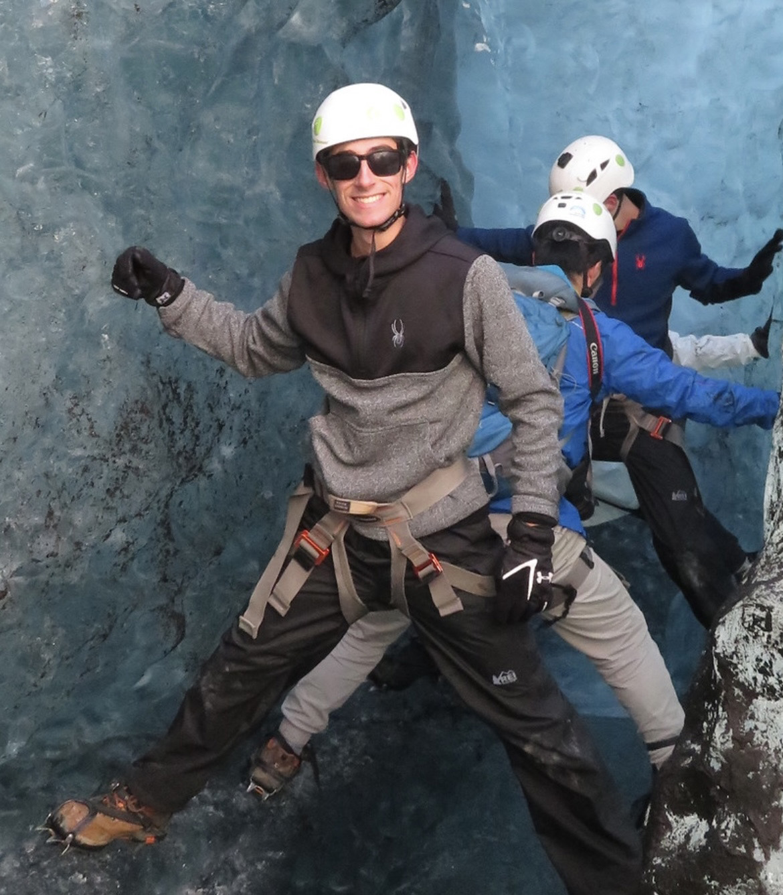

Quantum Networks Research with BIFROST
This page contains info about the research group behind the Birefringence in Fiber: Research and Optical Simulation Toolkit (BIFROST). Learn more about who has contributed, what we are trying to answer, and what we have learned so far.

What Are We Trying to Learn?

- What physical mechanisms cause noise processes in fiber-based quantum networks? How do different mechanisms affect different logical encodings (polarization, time-bin, etc.)?
- Are commercial telecom fibers really suitable for very-high-fidelity quantum network operations? If not, what are the alternatives?
- What fundamental limits do loss, polarization mode dispersion, and other fiber physics place on quantum networks?
To help us answer these questions, we have developed BIFROST, a Python and Julia library that models optical fibers from first principles. This library is a work-in-progress, and we look forward to using it to simulate quantum noise processes, investigate compensation schemes, and more!

Who Are We?
Patrick Banner (PI)

William Jin

Ari Smith
Collaborators: Joe Britton, Prakriti Shahi (University of Maryland/Joint Quantum Institute)
Past Contributors: Deven Bowman, Evan McClintock (University of Maryland)
What Have We Written?
(link) P. R. Banner, S. L. Rolston, and J. W. Britton. "BIFROST: A First-Principles Model of Polarization Mode Dispersion in Optical Fiber." Physical Review Applied 25, 034054 (2026). DOI: 10.1103/xgqr-rlmf.
This first paper presents BIFROST. We describe the physics underlying the model, the constraints on the model/operating regime of BIFROST, some validation work we have done, and a simple example simulation in the context of wavelength-division-multiplexed compensation of polarization qubits in a 26-km fiber.
PI's Past Work in Atomic and Optical Physics
Patrick previously worked in other areas of atomic and optical physics. The publications from that work include:
- (link) D. Kurdak, P. R. Banner, Y. Li, S. R. Muleady, A. V. Gorshkov, S. L. Rolston, and J. V. Porto. "Enhancement of Rydberg Blockade via Microwave Dressing." Physical Review Letters 134, 123404 (2025). DOI: 10.1103/PhysRevLett.134.123404.
- (link) P. R. Banner, D. Kurdak, Y. Li, A. Migdall, J. V. Porto, and S. L. Rolston. “Number-State Reconstruction with a Single Single-Photon Avalanche Detector.” Optica Quantum 2, 2 (2024). DOI: 10.1364/OPTICAQ.504308.
- (link) S. Olmschenk, P. R. Banner, J. Hankes, and A. Nelson. “Optogalvanic spectroscopy of the hyperfine structure of the 5p65d2D3/2,5/2 and 5p64f2Fo5/2,7/2 levels of La III.” Physical Review A 96, 032502 (2017). DOI: 10.1103/PhysRevA.96.032502.